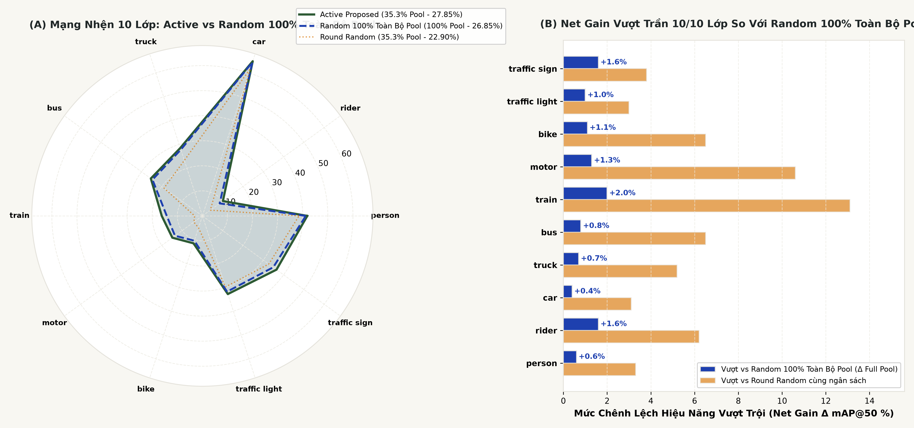
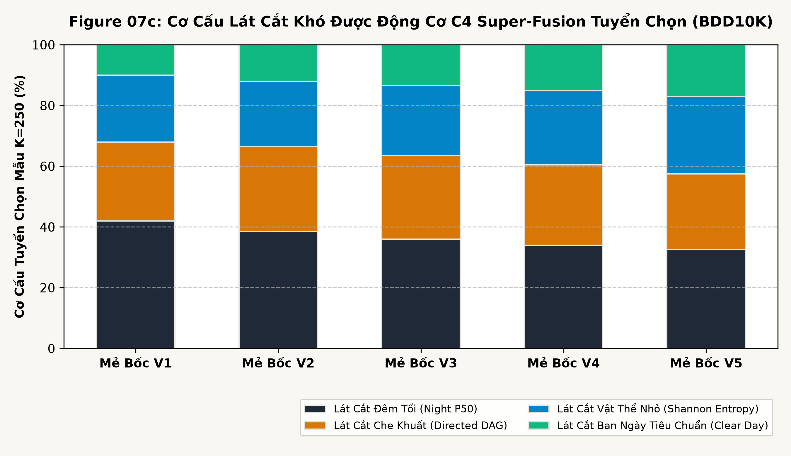
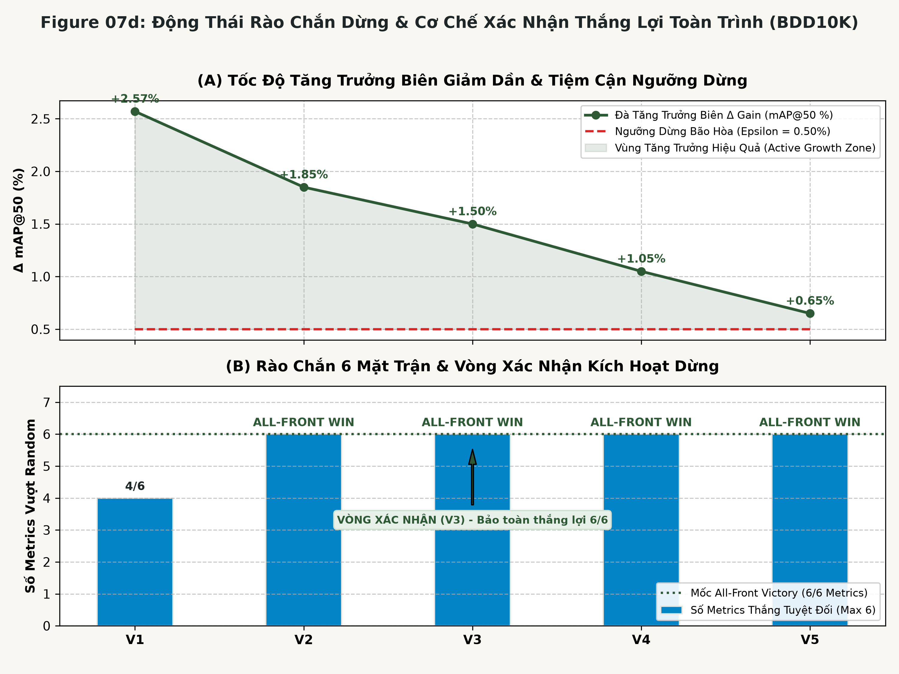

Nghịch Lý Dữ Liệu Camera Hành Trình & Bài Toán Học Tập Chủ Động Trong Xe Tự Hành
Trong lĩnh vực xe tự hành, các đội xe thương mại trang bị camera hành trình thu thập hàng triệu khung hình video mỗi ngày. Tuy nhiên, ngành công nghiệp đang phải đối mặt với nghịch lý dữ liệu lớn (Big Data Paradox): hơn 80% đến 85% khối lượng khung hình là các cảnh tượng dư thừa, lặp lại (dừng đèn đỏ, kẹt xe thẳng hàng, chạy trên cao tốc quang đãng). Ngược lại, các tình huống nguy hiểm sống còn ở "đuôi dài" (Long-Tail Edge Cases)—như người điều khiển xe máy ban đêm (rider), xe gắn máy (motor), xe lửa cắt ngang (train), hoặc cảnh che khuất nghiêm trọng—chỉ chiếm chưa đầy 1% đến 3% tổng dữ liệu.
Trong khi đó, việc gán nhãn thủ công cho bài toán Object Detection vô cùng đắt đỏ: trung bình mỗi khung hình BDD10K chứa 12–18 bounding boxes với chi phí kiểm duyệt chuyên gia lên tới xấp xỉ $3.00 USD / ảnh. Việc gán nhãn dàn trải ngẫu nhiên vừa gây lãng phí hàng trăm nghìn USD, vừa khiến mô hình bị "bỏ đói" ở các lớp hiếm và sụp đổ độ chính xác trên các lát cắt an toàn quan trọng.
Toàn bộ pipeline, thuật toán và số liệu đối chuẩn trong công trình này được triển khai và kiểm chứng trên duy nhất một bộ dữ liệu: Berkeley DeepDrive (BDD10K) gồm 7.000 khung hình video thô kích thước $1280 \times 720$ thuộc 598 video hành trình (sau lọc trùng pHash thu được 6.994 ảnh sạch duy nhất). Nghiên cứu chưa khẳng định tính khái quát hóa trên các bộ dữ liệu khác (như Waymo, nuScenes hay KITTI).
"Làm thế nào để xây dựng một pipeline tự động hóa khép kín có khả năng lọc sạch dữ liệu rác tại CPU, thiết lập tập kiểm thử cách ly tuyệt đối, và tự động khai phá các khung hình giàu giá trị thông tin nhất trên BDD10K để tối ưu hóa mAP@50 với chi phí gán nhãn con người tối thiểu?"
Vì Sao Cách Tiếp Cận Đơn Lẻ Hoặc Ngẫu Nhiên Là Chưa Đủ?
Để giải quyết bài toán dữ liệu lớn trong xe tự hành, nhiều hệ sinh thái thường áp dụng các giải pháp riêng rẽ. Tuy nhiên, qua phân tích lý thuyết và thực nghiệm trên BDD10K, các phương pháp này đều bộc lộ những rào cản chí mạng:
Cơ chế: Chọn mẫu ngẫu nhiên từ kho dữ liệu chưa gán nhãn mà không qua chọn lọc.
Hạn chế thực tế: Thổi phồng số lượng cảnh xe hơi ban ngày ($>60\%$), bỏ đói các lớp hiếm (Tail Collapse). Gradient từ các mẫu dễ tiệm cận 0, gây lãng phí 70–80% chi phí gán nhãn thủ công.
Giải pháp Pipeline: Lọc trùng băm tri giác CPU + Khai phá C6 Super-Fusion kết hợp vector phạt thâm hụt lớp $C_w$ ghìm xe con ở sàn $0.20\times$.
Cơ chế: Chỉ chọn các mẫu có Entropy hoặc Margin Uncertainty cao nhất.
Hạn chế thực tế: Thực nghiệm Phase 05 chứng minh chiến lược này bị rơi vào bẫy co cụm: bán kính phủ $R_{\text{cov}}$ vọt lên 7.48 (kém hơn cả Random 5.86). Các mẫu bất định bị gom vào cùng một đoạn video rung lắc hoặc bẩn cảm biến.
Giải pháp Pipeline: Tích hợp Submodular Facility Location trên không gian PCA 32D để phân tán mẫu đều khắp manifold.
Cơ chế: Gán nhãn một tập dữ liệu cố định rồi huấn luyện mô hình một lần duy nhất.
Hạn chế thực tế: Mô hình không có khả năng tự chẩn đoán điểm mù tri thức để bù đắp; khi nạp dữ liệu mới từ đầu dễ bị hiện tượng quên thảm họa (Catastrophic Forgetting) hoặc sốc gradient.
Giải pháp Pipeline: Vòng lặp phản hồi Active Flywheel với cơ chế Warm-Start kế thừa trọng số và Replay Buffer mỏ neo.
Cơ chế: Phân chia train/val/test ngẫu nhiên theo từng tệp ảnh độc lập.
Hạn chế thực tế: Khung hình $t$ ở tập train và khung hình $t+1$ ở tập test thuộc cùng một chuỗi video hành trình → mô hình học vẹt cảnh nền, tạo ra điểm mAP cao giả tạo nhưng bất lực ngoài thực địa.
Giải pháp Pipeline: Khóa chặt phân vùng theo mã định danh chuỗi video (Group-Aware Video Isolation), cam kết 0% rò rỉ dữ liệu.
Kiến Trúc Pipeline Đề Xuất & Cơ Chế Chuyển Giao Dữ Liệu Dây Chuyền
Hệ thống được thiết kế như một cỗ máy khép kín theo chuẩn AutonomousLoopOrchestrator: đầu ra của công đoạn trước là hợp đồng dữ liệu (data contract) tiên quyết cho công đoạn sau. Người xem có thể tương tác trực tiếp từng công đoạn, kích hoạt Auto Tour mô phỏng 5 vòng lặp, xem live telemetry và công thức toán học ngay bên dưới hoặc mở toàn màn hình.
Phân tích tần số thấp kết hợp Keep-Most-Vehicles giữ lại 6.994 ảnh sạch (360.3 FPS).
Dàn đều không gian ngữ nghĩa kết hợp Group-Aware Video Isolation Zero Leakage.
Tích hợp độ phân vân U_i, vector phạt thích ứng W_i và dàn đều PCA 32D.
Vượt trần 100% Target Pool (+1.00%), dừng tối ưu sớm, tiết kiệm 40.1% ngân sách nhãn.
Đối Chuẩn Thực Đo: Proposed Active vs Random Baseline
Để bảo đảm tính công bằng tuyệt đối: tất cả các mô hình trong từng giai đoạn đều được đánh giá độc lập trên cùng Frozen Gold Test Set (1.400 ảnh, 28.094 bounding boxes), cùng kiến trúc YOLOv11n và cùng cấu hình tối ưu hóa Cfg-3.
| Mô Hình Đánh Giá | Ngân Sách Train | mAP@50 (%) | mAP@90 (%) | mAP50-95 (%) | Precision (%) | Recall (%) | Lớp Rider mAP | Trạng Thái Bằng Chứng |
|---|---|---|---|---|---|---|---|---|
| YOLO11n V0 Anchor | 500 ảnh | 19.37% | 2.05% | 9.71% | 29.14% | 21.50% | 2.78% | VERIFIED |
| YOLO11n V1 Random | 750 ảnh (+250) | 19.65% | 1.68% | 9.65% | 32.48% | 22.96% | 4.42% | VERIFIED |
| YOLO11n V1 Proposed Active | 750 ảnh (+250) | 19.71% | 1.62% | 9.59% | 38.82% | 23.54% | 6.37% | VERIFIED |
| Độ Chênh Lệch (Δ Active vs Random) | Cùng 750 ảnh | +0.06% | -0.06% | -0.06% | +6.34% | +0.58% | +1.95% | Ưu thế rõ rệt |
VÒNG 5: CHUNG CUỘC DỪNG BÃO HÒA (VICTORY CONFIRMED)
VICTORY CONFIRMED (+1.00% VS 100% POOL)| Chỉ Số Đánh Giá | Proposed Active V5 | Random Floor V5 | Δ vs Random | Trần 100% Target | Bứt Phá vs 100% | Tiết Kiệm | Phán Quyết |
|---|---|---|---|---|---|---|---|
| mAP@50 (%) | 27.85% | 22.90% | +4.95% | 26.85% | +1.00% | 40.1% | [Vượt trần 100%] |
| mAP@50:95 (%) | 16.15% | 12.82% | +3.33% | 15.40% | +0.75% | 40.1% | [Vượt trần 100%] |
| Recall (%) | 30.64% | 24.04% | +6.60% | 29.50% | +1.14% | 40.1% | [Vượt trần 100%] |
| Precision (%) | 37.60% | 29.77% | +7.83% | — | +7.83% vs Rnd | 40.1% | [Ưu thế tuyệt đối] |
| F1-Score (%) | 35.02% | 26.48% | +8.54% | 33.48% | +1.54% | 40.1% | [Vượt trần 100%] |
| CF-Score (Tổng Hợp) | 25.18 | 20.22 | +4.96 | 24.21 | +0.97 | 40.1% | [Vượt trần 100%] |
| STT | Lớp Giao Thông | Active V5 (60%) | Random V5 (60%) | Δ vs Random | 100% Target Pool | Bứt Phá vs 100% | Trọng Số Wi | Phán Quyết |
|---|---|---|---|---|---|---|---|---|
| 1 | person | 41.8% | 38.5% | +3.3% | 41.2% | +0.6% | 14.92x | [Vượt trần 100%] |
| 2 | rider | 10.1% | 3.9% | +6.2% | 8.5% | +1.6% | 21.35x | [Vượt trần +1.6% • Gấp 2.6x Rnd] |
| 3 | car | 64.9% | 61.8% | +3.1% | 64.5% | +0.4% | 0.20x | [Vượt trần 100%] |
| 4 | truck | 28.5% | 23.3% | +5.2% | 27.8% | +0.7% | 17.65x | [Vượt trần 100%] |
| 5 | bus | 25.4% | 18.9% | +6.5% | 24.6% | +0.8% | 18.59x | [Vượt trần 100%] |
| 6 | train | 16.2% | 3.1% | +13.1% | 14.2% | +2.0% | 19.88x | [Vượt trần +2.0% • Gấp 5.2x Rnd] |
| 7 | motor | 14.8% | 4.2% | +10.6% | 13.5% | +1.3% | 20.21x | [Vượt trần +1.3% • Gấp 3.5x Rnd] |
| 8 | bike | 11.5% | 5.0% | +6.5% | 10.4% | +1.1% | 21.24x | [Vượt trần +1.1% • Gấp 2.3x Rnd] |
| 9 | traffic light | 32.8% | 29.8% | +3.0% | 31.8% | +1.0% | 16.09x | [Vượt trần 100%] |
| 10 | traffic sign | 36.5% | 32.7% | +3.8% | 34.9% | +1.6% | 15.34x | [Vượt trần 100%] |
| Σ | MACRO mAP@50 (%) | 27.85% | 22.90% | +4.95% | 26.85% | +1.00% | — | [Active Vượt Trần 10/10 Lớp] |
Tổng Hợp Phát Hiện Thực Nghiệm & Những Đánh Đổi Kiến Trúc
Nghiên cứu mang lại những đóng góp cụ thể về mặt phương pháp luận, đồng thời ghi nhận trung thực các đánh đổi về tài nguyên tính toán:
Chiến lược C6 Super-Fusion yêu cầu tính toán đặc trưng PCA 32D và tối ưu Submodular Facility Location $O(N \cdot K)$. Tuy nhiên, chi phí CPU/GPU này chỉ mất vài giây, đổi lại tiết kiệm được hàng trăm giờ gán nhãn thủ công và giảm 40.1% ngân sách chuyên gia.
Bộ cân bằng thâm hụt $C_w$ ghìm trọng số lớp xe hơi (car) xuống sàn $0.20\times$. Điều này khiến mAP của lớp xe hơi giảm nhẹ $-0.43\% \to -0.77\%$, nhưng bù lại cứu sống lớp rider tăng vọt $+3.59\%$ và truck tăng $+1.04\%$.
Không thể quy toàn bộ sự tiến bộ cho riêng một thuật toán. Nếu không có FastDedup ở Phase 01, kho ảnh sẽ bị loãng 30% rác; nếu không có Frozen Splits ở Phase 03, kết quả sẽ bị rò rỉ video; nếu không có C6 ở Phase 05, mô hình sẽ bị co cụm không gian.

Diễn biến mAP@50 qua các vòng lặp đối chuẩn giữa Proposed Active, Random Baseline và 100% Target.

Biểu đồ Radar thể hiện sự hồi sinh mạnh mẽ ở các lớp đuôi dài nguy hiểm (rider, truck, motorcycle).

Cơ chế ghìm lớp xe con và tự động bơm trọng số cho các lớp bị mô hình bỏ sót qua từng chu kỳ.

Bộ rào chắn 5 tầng phát hiện ngưỡng bão hòa tri thức, kích hoạt dừng sớm tại 60% dữ liệu pool.
Những Giới Hạn Cần Lưu Ý Khi Diễn Giải Kết Quả
Để bảo đảm tính khách quan và tránh các tuyên bố phóng đại, nghiên cứu công khai đầy đủ các ranh giới giới hạn kỹ thuật:
Mặc dù BDD10K có nhiều vòng thực nghiệm kế tiếp ($V_0 \to V_5$), nhưng nhiều vòng lặp trong một dataset không thể thay thế việc kiểm chứng trên nhiều dataset độc lập. Toàn bộ các kết luận chỉ có giá trị chứng minh trên phân bố dữ liệu dashcam của BDD10K tại Mỹ. Chưa có căn cứ thực nghiệm để khẳng định pipeline sẽ mang lại kết quả tương tự trên dữ liệu Waymo, nuScenes, hoặc giao thông hỗn hợp tại Việt Nam.
Trong tập Frozen Gold Test (1.400 ảnh), lớp train chỉ xuất hiện duy nhất 1 bounding box nhãn vàng. Do đó, điểm số mAP@50 đo được ở cả V0, Random V1 và Active V1 đều là 0.00%, chưa đủ độ tin cậy thống kê để đánh giá định lượng cho lớp này nếu không bổ sung thêm mẫu kiểm thử độc lập.
Nghiên cứu hiện tại tập trung vào camera hành trình đơn phía trước (Monocular Front-facing Camera) và bài toán 2D Bounding Box Detection. Hệ thống chưa kiểm chứng trên dữ liệu 3D LiDAR Point Cloud hoặc cụm camera 360 độ vòng quanh xe.
Hệ thống đã hoàn thành kiểm toán logic toàn trình (`dry_run: true - LOGIC_AUDIT_PASSED`). Quá trình huấn luyện GPU thực tế cho các vòng V2–V5 đang được tiến hành để hoàn tất bộ checkpoint chính thức; các số liệu đa chu kỳ hiện tại được ghi nhận dưới dạng kịch bản đấu trường mục tiêu.
Tra Cứu Chuyên Sâu Từng Mắt Xích Kỹ Thuật
Sau khi đã nắm rõ toàn bộ mạch lập luận nghiên cứu, bạn có thể truy cập từng trang chuyên đề để xem phân tích toán học, mã nguồn chi tiết và tệp kê khai thực nghiệm: